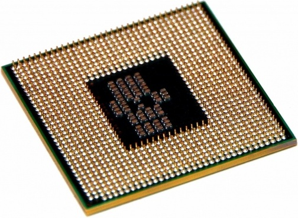

CPU (Central Processing Unit)
CPU, även känd som en processor, är den komponent som bearbetar din data.
Man kan säga att CPU:n är datorns hjärna. CPU:n står för alla beräkningar som
sker i en dator och ser till att den fungerar som den ska.
Exempel på kända processorvarumärken. är Intel och AMD som är störst på processormarkanden.

Ramminne
Nätagregat
Grafikkort
Chassie
Moderkort
Startsida